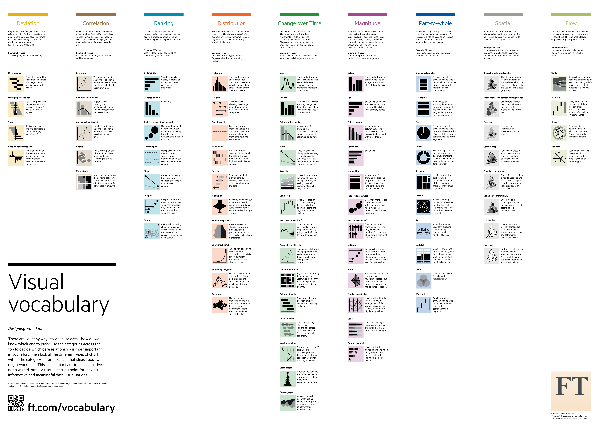

{kind=link}
{kind=link}
{kind=link}
{kind=link}
{kind=link}
{kind=link}
{kind=link}
{kind=link}
{kind=link}
{kind=link}
# load libraries
library(stringr)
# read html
html <- read_html("https://www.govdata.de/suche/daten/hundebiss-statistik-berlin")
# extract all links
links <- html |>
html_elements("a") |>
html_attr("href")
# filter links if they end with ".csv"
csv_links <- links[str_detect(links, ".csv$")]
# download all csv files
for (u in csv_links) {
download.file(u, file.path(here::here("data/raw"), basename(u)))
}Workflows & Werkzeuge
Beispiel: “Wie Europa seinen Solarboom finanziert”
von Kira Schacht / Deutsche Welle 🔗 Deutsch 🔗 English
Fragen zum Lesen:
- Was gefällt dir (nicht)? Warum?
- Was interessiert dich? Was langweilt dich?
- Wenn du fertig bist: Was ist hängen geblieben?
Was man daraus lernen kann:
- Wir Menschen lieben Geschichten – vor allem über Menschen. Daten können uns zu diesen interessanten Menschen und ihren Geschichten führen.
- Für unterschiedliche Aussagen eigenen sich unterschiedliche Arten von Grafiken.
- Grafiken müssen in den Text eingebunden sein. Sie sind Teil des Textes, kein “nettes Extra”. (Auch im Sinne der Barrierefreiheit ist die zentrale Aussage einer Grafik aber auch im Text.)
Storytelling – Die Grundlagen
1. Was ist eine Geschichte?
Gute Frage, hierzu könnte man ein eigenes Studium machen. Oder man nimmt die Abkürzung und liest ein Buch wie beispielsweise “Storytelling” von Sven Preger, der vor allem Audio-Geschichten erzählt, z.B. für den Deutschlandfunk oder den WDR. Darin steht:
“Eine Geschichte besteht in aller Regel aus drei Basis-Elementen: eine aktiv-handelnde Person, ein konkretes Ziel und (etliche) Widerstände.
Es gibt viele Möglichkeiten, diese Basis-Elemente zu strukturieren. In der Erzähltheorie gibt es verschiedene Modelle, wie Handlungen strukturiert sein können. Ganz klassisch, wie in den Dramen von Goethe und Schiller lernt man in der Schule oft den Aufbau, der sich bis auf Sophokles im antiken Griechenland zurückführen lässt: auslösendes Moment im ersten Akt, Zuspitzung des Konflikts im zweiten Akt, Herausforderung im dritten, Höhepunkt im vierten und dann die Auflösung im fünften Akt. Hier eine Abbildung aus einem mehr oder weniger zufällig ausgewählten Lehrbuch (Harzer 2017, S. 197):
Insbesondere in der Filmindustrie ist mittlerweile aber auch das Konzept der “Heldenreise” verbreitet, hier dargestellt von Sven Preger in seinem Buch “Storytelling” (S. 74):
Das ist natürlich ganz schön detailliert und komplex. Um die eigene Geschichte zu strukturieren, schlägt Sven Preger deshalb, kurz und prägnant, einen Erzählsatz vor:
“A (der Protagonist) will B (seine Absicht/sein Ziel), weil er C (die Motivation), stößt aber auf D (Hindernisse). Diese Hindernisse muss der Protagonist überwinden, oder es zumindest versuchen. Der Erzählsatz ist damit der Kompass, an dem sich die Geschichte ausrichtet.”
2. Was ist eine Nachricht?
Jetzt soll eine Geschichte ja in unserem Fall nicht fiktional sein, sondern vor allem Wissen vermitteln. Aber was ist überhaupt relevant, und damit vermittelnswert?
Im Journalismus gibt es unterschiedliche Darstellungsformen. Grob unterteilt man in informierende und meinungsäußernde Formen. Informierend sind Nachrichten, Reportagen, Interviews oder Korrespondentenberichte. Meinungsäußernd ist zum Beispiel der Kommentar.
Eine Nachricht sollte möglichst viele der sieben wichten Fragen beantworten – diese können wir verwenden, um Fragen an unsere Daten zu entwickeln:
- Wer? (Wer hat am meisten…? Wer hat am wenigsten…?)
- Was? (Was ist anders als vielleicht angenommen?)
- Wo? (Wo häufen sich die Ereignisse?)
- Wann? (Wann hat sich etwas verändert? Wie hat sich etwas entwickelt?)
- Wie? (Wie hängen x und y zusammen?)
- (Warum?)
- Woher? (Woher kommen die Daten? Wer hat sie mit welchem Interesse erhoben?)
(siehe Einführung in den praktischen Journalismus)
Grundprinzipien der Datenarbeit
- Wir verändern niemals Originaldaten.
- Wir arbeiten möglichst nachvollziehbar, also möglichst nah am Original.
- Wir dokumentieren unsere Arbeitsschritte, um sie reproduzieren zu können.
→ Wir rechnen also mit Fehlern und arbeiten so, dass wir sie finden und korrigieren können.
Das Ding mit der Objektivität…
Die Vorstellung, Journalismus müsse “neutral” sein, ist weit verbreitet. Tatsächlich steht im Medienstaatsvertrag aber kein Wort von Neutralität in Bezug auf den Journalismus. Stattdessen sind die öffentlich-rechtlichen Medienanstalten verpflichtet zur “unabhängigen, sachlichen, wahrheitsgemäßen und umfassenden Information und Berichterstattung”. (Kann man nachlesen oder in sechs Minuten hier nachhören.)
Ein verbreitetes Zitat stammt von dem Fernseh-Journalisten Hanns Joachim Friedrichs: “Einen guten Journalisten erkennt man daran, dass er sich nicht gemein macht mit einer Sache, auch nicht mit einer guten Sache.” Das kann ohne Kontext aber leicht missverstanden werden und wird immer wieder diskutiert. Die beste Einordnung liefert ein Text von Uebermedien. Der Kern: Journalist*innen müssen berichten über alles, was in der Welt passiert. Und dürfen sich davon nicht überrollen lassen. Sonst könnten sie ihren Job nicht machen.
Wie sich Journalist*innen, insbesondere im öffentlich-rechtlichen Rundfunk, äußern dürfen, wird immer wieder angegriffen. Aktuell beispielsweise in Bayern mit Reformplänen für ein neues Rundfunkgesetz. Das will unter anderem im Prinzip eine “Informationsquote” fürs Fernsehen vorschreiben. Aber auch die Zivilgesellschaft soll sich möglichst nicht “politisch” äußern – das Demokratieförderprogramm soll gerade unter Leitung von Ministerin Karin Prien “in die Mitte” gerückt werden. Hier gut erklärt in einem Artikel der Zeit. Was bleibt: Alleine die permanente Unterstellung, dass Institutionen, die sich für ein vielfältiges und friedliches Miteinander einsetzen, “links” sind, verunsichert.
Umso wichtiger ist gute Arbeit – und erklären, was gute Arbeit ist. Im Kontext von Daten heißt das:
Denn ganz wichtig: Daten brauchen Kontext. Und der muss mitgedacht werden! Sonst wird es unangenehm, wie für Innenminister Alexander Dobrindt 2025 zum Verfassungsschutzbericht. Der Bericht von T-Online zeigt gut, wie zwei gleich aussehende Grafiken unterschiedliche Skalen hatten:

Wie plane ich ein Datenprojekt?
Beispielablauf
- Idee: Irgendjemand hat eine Idee…
- Datenrecherche: Welche Daten gibt es?
- Quellenkritik: Was können die Daten sagen, was nicht?
- Hypothesen finden: “Drehbuch der Recherche”
- Daten analysieren: Hypothesen prüfen
- Daten einordnen lassen: Expert*innen suchen, Interviews und Hintergrundgespräche führen
- Veröffentlichung planen: Grafiken entwerfen, texten
- Ergebnisse verifizieren: mindestens 4-Augen-Check
🏋 Übung: Hundebiss-Statistik Berlin 2024
“Gestern hat ein Hund einen Menschen schwer verletzt. Passiert sowas eigentlich öfter?”
1. 🔍 Datenrecherche: Welche Daten gibt es?
Suchtipps anzeigen
- Suchmaschine → Website Berlin
- govdata.de → Datensatz zum Download
Wir mögen CSV-Dateien
- größter Vorteil: klein
- sehr schlicht, können eigentlich alle Programme öffnen
- Nachteil: speichern keinen Kontext
2. 📐 Quellenkritik: Was können die Daten sagen, was nicht?
- Was sind die aktuellsten verfügbaren Daten – in welchen Zyklen werden frische Daten veröffentlicht?
- Könnte es ein, dass bis zur geplanten Veröffentlichung aktualisierte Daten bereitstehen?
- Wie zuverlässig sind die Daten – kommen sie möglichst direkt von der Erhebungsstelle?
- Was wissen wir über die Daten – gibt es Kontext-Informationen?
3. 🤔 Hypothesen finden: “Drehbuch der Recherche”
- Welche Hunde haben die meisten Menschen verletzt?
- Welche Hunde haben im Verhältnis zu allen Menschen, die sie verletzt haben, die meisten Menschen schwer verletzt?
- Welche Hunde, die nicht als gefährlich gelten, haben mehr Menschen verletzt, als solche, die als gefährlich gelten?
4. 🛠 Daten analysieren: Hypothesen prüfen
- Hier: Summen bilden, Anteile ausrechnen
5. 💬 Daten einordnen lassen: Interviews & Hintergrund
- Gibt es einen Kontakt zur datenveröffentlichenden Stelle – wer ist fachlich zuständig?
- Welche Expert*innen beschäftigen sich noch mit den Daten und können in einem Hintergrundgespräch die Methodik einordnen?
6. ✍️ Veröffentlichung planen: Grafiken entwerfen, texten
- Was ist interessant?
- Die richtige Grafik zur Aussage finden:

- Empfehlung für Visualisierungen: Datawrapper
7. 👀 Ergebnisse verifizieren: mindestens 4-Augen-Check
- Aussagen auf Plausibilität prüfen
- dokumentierte Schritte nachvollziehen
Datenquellen
- Statistisches Bundesamt
- Statistische Landesämter
- govdata.de – Daten von Behörden, Kommunen, etc.
- Drucksachen Bundestag
- Google Dataset Search
Welche Daten dürfen wir benutzen?
“Open Data” ist ein feststehender Begriff seit vielen Jahren. In Deutschland gibt es dafür verschiedenste Regelungen, aber keine umfassende Verpflichtung, dass öffentliche Einrichtungen offene Daten verfügbar machen müssen. Dabei bedeutet das, dass man Daten frei nutzen kann, ohne weitere Einschränkungen:
“Open means anyone can freely access, use, modify, and share for any purpose (subject, at most, to requirements that preserve provenance and openness).”
https://opendefinition.org/
In der Praxis ist das in Deutschland oft anders umgesetzt und die datenveröffentlichende Stelle verlangt ihre Nennung. Das regelt die jeweilige Lizenz:
govdata.de rät zu CC-Lizenzen
🏋 Übung: Hundebiss-Statistik Rheinland-Pfalz 2024
Suchtipps anzeigen
- Google-Suche: “innenministerium rheinland pfalz hund filetype:pdf 2024”
- 🔗
Beispiel-Bericht anzeigen
“Zahl der Verletzten durch Hundebisse in Berlin zurückgegangen” rbb24.deTools, um Tabellen aus PDFs zu extrahieren
tabula Download oder gehostet (öffentlich!!)
mit der Programmiersprache Python: camelot / excalibur
für komplexere Dokumente, Python-Kenntnisse nötig: docling
Wie finde ich Tools?
- alternativeto.net: Einstellungen: “Open Source” + eigenes Betriebssystem
- github.com: Code-Plattform (gehört Microsoft), die kuratierte “awesome”-Listen hat, z.B. https://github.com/topics/awesome-list
- abgucken bei anderen:
🏋 Übung: Hundebiss-Statistik Berlin über die Jahre
Wir erinnern uns: Auf govdata.de gab es Datensätze bis 2016 zurück…
Herausforderungen: - wir müssen die alle runterladen (= scraping) - idealerweise brauchen wir das in einer Datei (= coding)
Schritt 1: Links zu csv-Dateien sammeln
- Browser öffnen + Developer-Tools ausklappen (Win/Linux:
Ctrl + Shift + IorF12; macOS:Cmd + Opt + I) - Ganz links in der Ecke auf das Icon mit Rechteck und Cursor klicken (Win/Linux:
Ctrl + Shift + C; macOS:Cmd + Opt + C) - jetzt zu einem csv-Button navigieren und anklicken
Schritt 3: R installieren
Schritt 4: RStudio installieren
Schritt 5: R-Projekt anlegen
Empfehlung für eine Ordnerstruktur:
├── code
├── data
│ ├── raw
│ ├── helpers
│ ├── processed
│ └── final
└── report
├── img
└── docsanlegen:
- Anwendung “Terminal” suchen → öffnen
- ein paar Befehle ausprobieren:
ls -llistet alle Ordner und Dateien auf, mit ein paar Metadatencd /hier/ein/pfad/zum/ordnerspringt zu einem Ordnerpwdzeigt an, in welchem Ordner man sich gerade befindet- alle Ordner wie oben anlegen: 🪄
mkdir -p code data/raw data/helpers data/processed data/final report/img report/docsSchritt 6: Code kopieren, ausführen, glücklich werden
Code anzeigen
Langeweile?
Weiterlesen / -hören
- Storytelling:
- Sven Preger (2024): “Geschichten erzählen : Storytelling für Radio und Podcast”
- BR kontrovers (2025): “Bauen im Überschwemmungsgebiet, Unterwegs mit der Dorfpolizei und mehr”
- Datenjournalismus:
- Christina Elmer, Lorenz Matzat (Hrsg.): “Handbuch Daten und KI im Journalismus”
- Journalismus allgemein:
- Gabriele Hooffacker, Klaus Meier (2026): “La Roches Einführung in den praktischen Journalismus”
- Maria Ressa (2022): “How to stand up to a dictator”
- Podcast: Anja Reschke im Hotel Matze (2025): “Welche Aufgabe hat der Journalismus”